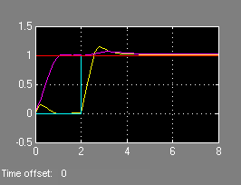

This demonstration shows how to use MPC to control a multi-input multi-output nonlinear system. The system has 3 manipulated variables and 2 measured outputs.
Author: A. Bemporad
The model is described in the Simulink diagram NONLINEAR_MPCMODEL.MDL
sys='nonlinear_mpcmodel';
Linearize the model at (0,0)
[A,B,C,D]=linmod(sys);
Ts=.2; %Sampling time model=c2d(ss(A,B,C,D),Ts); %Convert to discrete time clear A B C D
Give some names to variables (the model has no physical meaning, however)
model.InputName={'Mass Flow';'Heat Flow';'Pressure'};
model.OutputName={'Temperature';'Level'};
Define input and output specifications
clear InputSpecs OutputSpecs InputSpecs(1)=struct('Min',-2,'Max',2,'RateMin',-Inf,'Ratemax',Inf,'Units','kg/s'); InputSpecs(2)=struct('Min',-1,'Max',1,'RateMin',-Inf,'Ratemax',Inf,'Units','J/s'); InputSpecs(3)=struct('Min',-1,'Max',1,'RateMin',-Inf,'Ratemax',Inf,'Units','Pa'); OutputSpecs(1)=struct('Min',-Inf,'Max',Inf,'Units','K');
Define weights
Weights=struct('ManipulatedVariables',[0 0 0],... 'ManipulatedVariablesRate',[.1 .1 .1],... 'OutputVariables',[1 1]);
Define prediction and control horizons, and set up the MPC object
p=5; m=2; MPCobj=mpc(model,Ts,p,m,Weights,InputSpecs,OutputSpecs);
Run simulation
mpc_nonlinear % Display Simulink diagram Tfinal=8; sim('mpc_nonlinear',Tfinal)
manipulated variables
measured outputs and references

In order to track a ramp, a triple integrator is defined as an output disturbance model on both outputs
outdistmodel=tf({1 0;0 1},{[1 0 0 0],1;1,[1 0 0 0]});
%pack(MPCobj)
setoutdist(MPCobj,'model',outdistmodel);
Change input bounds
clear InputSpecs InputSpecs(1)=struct('Min',-3,'Max',3,'RateMin',-Inf,'Ratemax',Inf,'Units','kg/s'); InputSpecs(2)=struct('Min',-2,'Max',2,'RateMin',-Inf,'Ratemax',Inf,'Units','J/s'); InputSpecs(3)=struct('Min',-2,'Max',2,'RateMin',-Inf,'Ratemax',Inf,'Units','Pa'); MPCobj.MV=InputSpecs;
Run simulation
Tfinal=12; mpc_nonlinear_setoutdist % Display the Simulink model sim('mpc_nonlinear_setoutdist',Tfinal)
manipulated variables
measured outputs and references
When the constraints are not active, the MPC controller behaves like a linear controller. We can then get the state-space form of the MPC controller
Get the linear equivalent in SS form of the MPC controller
[LTIMPC,Br,Dr]=ss(MPCobj);
Augment model in order to have [ym;r] as the input to the controller
set(LTIMPC,'b',[LTIMPC.b,Br],'d',[LTIMPC.d,Dr]);
Remove constraints from MPC controller
clear InputSpecs InputSpecs(1)=struct('Min',-Inf,'Max',Inf,'RateMin',-Inf,'Ratemax',Inf,'Units','kg/s'); InputSpecs(2)=struct('Min',-Inf,'Max',Inf,'RateMin',-Inf,'Ratemax',Inf,'Units','J/s'); InputSpecs(3)=struct('Min',-Inf,'Max',Inf,'RateMin',-Inf,'Ratemax',Inf,'Units','Pa'); MPCobj.MV=InputSpecs;
Run simulation
mpc_nonlinear_ss % Display the Simulink model refs=[1;1]; % output references Tfinal=8; sim('mpc_nonlinear_ss',Tfinal) % Compare simulation results fprintf('Comparing simulation results: norm(yqp-ylin)=%g\n',norm(yqp-ylin));
Comparing simulation results: norm(yqp-ylin)=1.96776e-014

manipulated variables
measured outputs and references
manipulated variables
measured outputs and references